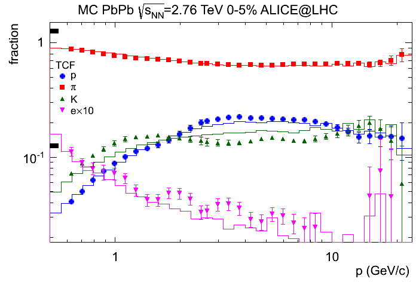
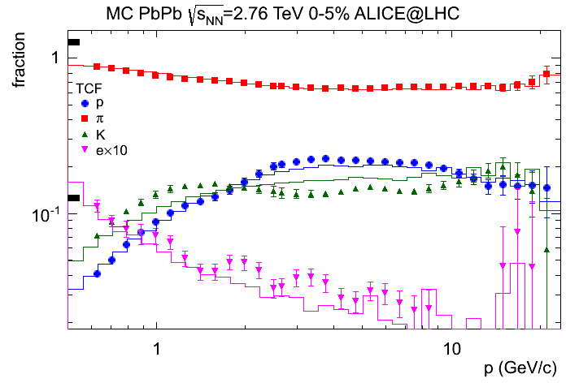TPC Coherent Fit
What is it about?
How does it work?
What do I expect from it?
Is the program available somewhere?
Reference
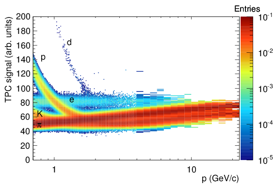
What we see in this figure is the signal distribution (normalized in each momentum bin) of the Time Projection Chamber (TPC) in the ALICE experiment at the LHC. The pattern is clear. We see pions (π), kaons (K), electrons (e), protons (p), and some tiny amount of deuterons (d). In some regions, we see separation between different species. Now the question is:
We have the following general assumptions:
As is previously mentioned, the signal properties are extracted by the fit. The following figure shows the estimated mean signals (black curves) overlaid on top of the distribution for real data.
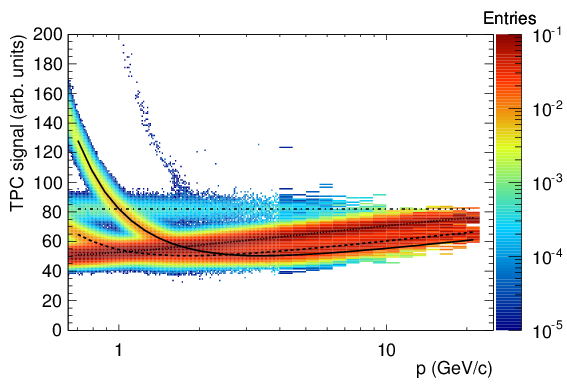
The advantage of the coherent fit (without regularization) over the conventional approach -- the incoherent fit which fits the signal in individual momentum bins separately -- is demonstrated in a ToyMC where a signal-momentum-distribution is generated with given parametrizations of the signal mean and spread. The same parametrizations are used in the coherent and incoherent fit so that the comparison between the extracted fractions is parametrization-independent and only depends on the mechanism how the intra-bin information is organized. The following figure compares the corresponding extracted fractions to the true values. It shows a dramatic improvement of the unbiasedness when the intra-correlation between momentum-bins is used.
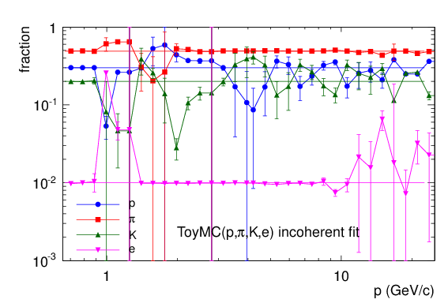 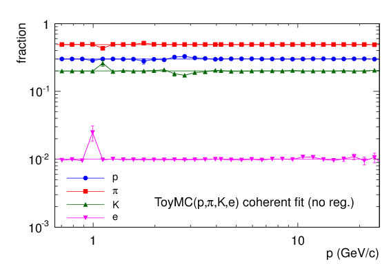
The particle fractions of the proton, pion and kaon from real data are shown in the figure below (the electron fraction which is at per mil level is not shown). Open symbols are the outcome without requiring the continuity of the fractions; solid symbols are the final results with the regularization. It shows that even in the momentum regions where there is no separation, useful information is obtained by extrapolation from neighboring regions via the continuity condition.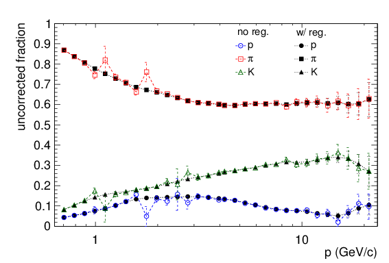
The following figures compare the extracted fractions by the TPC coherent fit (TCF) to the Monte Carlo truth in different collision systems at ALICE. The first uncertainty to notice is the residual biases at the pion-kaon crossing at p around 1 GeV/c and at the kaon-proton crossing at around 2 GeV/c. Further improvement using subsidiary PID is discussed in [3]. The second uncertainty is due to a deteriorated dE/dx resolution. For Pb-Pb most central collisions where the ALICE TPC dE/dx resolution is about 7%, the bias of kaon, which is the biggest among all hadrons, is about 20%. Despite these uncertainties, the interesting points to take are the following.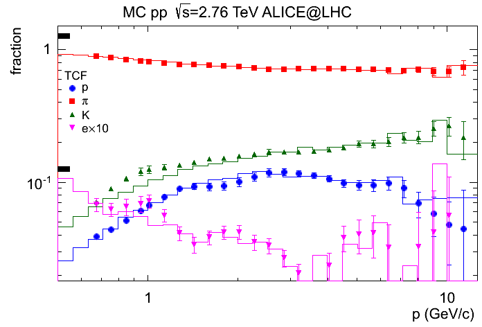 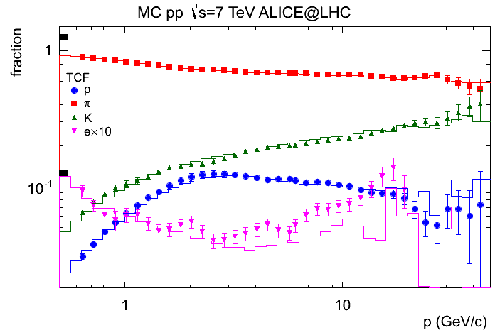
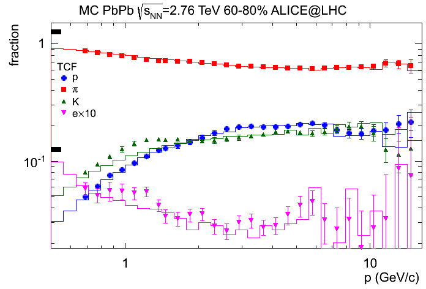 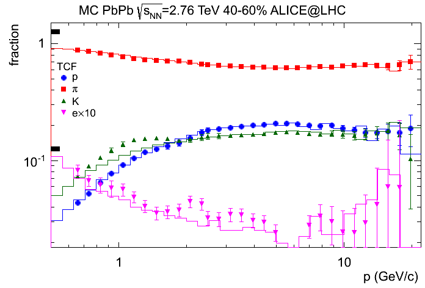
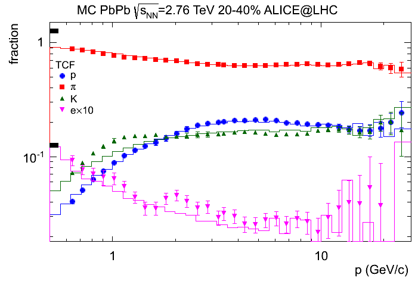 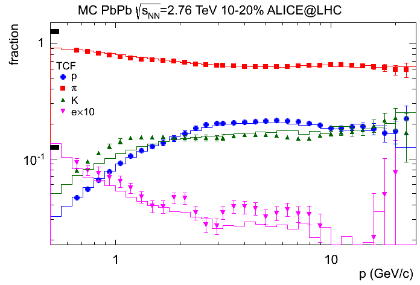
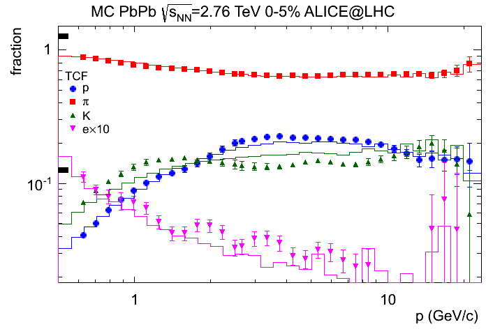
Is the program available somewhere?
Yes. Here is the tarball: click to download (~106K) v0.4.2 (22.Jul.2014), v0.4.5 (05.Dec.2015).
In case of questions or comments, please feel free to contact me: lu.xianguo__at__gmail.com.
[1] D. Decamp et al. [ALEPH Collaboration], "ALEPH: A detector for electron-positron annnihilations at LEP," Nucl. Instrum. Meth. A 294 (1990) 121 [Erratum-ibid. A 303 (1991) 393].
[2] J. Beringer et al. [Particle Data Group Collaboration], "Review of Particle Physics (RPP)," Phys. Rev. D 86 (2012) 010001.
[3] Xianguo Lu,
"Exploring the performance limits of the ALICE Time Projection Chamber and Transition Radiation Detector for measuring identified hadron production at the LHC", doctoral dissertation at the University of Heidelberg (2013). CERN-THESIS-2013-179.